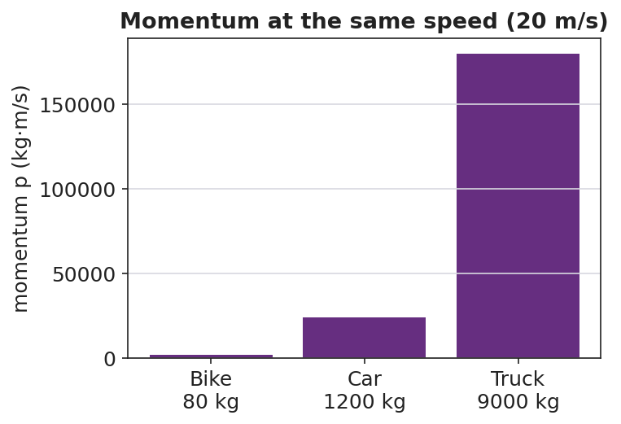
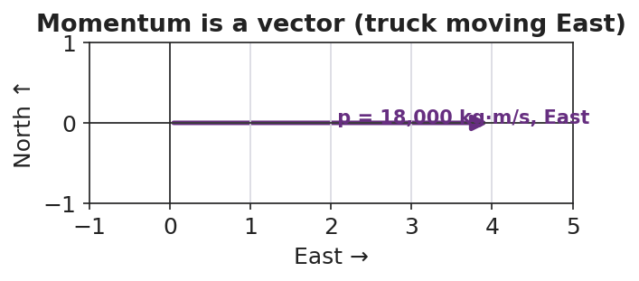

Unit: Momentum & Impulse — Lesson 01: Momentum
Phenomenon
In a Newton's cradle, one ball swings in and exactly one ball swings out — every time. Then your teacher poses a choice: a loaded dump truck and a bicycle are both rolling toward you at the same speed. You can only step out of the way of one. Which do you let pass — and why?
Driving Question
What makes one moving object harder to stop than another?
Notice & Wonder
Watch the cradle and picture the truck-versus-bike choice. Write two things you notice and two things you wonder.
Initial Model
Rank these from easiest to hardest to stop: a tennis ball thrown gently, a tennis ball thrown hard, a bowling ball rolled gently, a bowling ball rolled hard. Then write one sentence explaining the rule you used to rank them.
Investigate
Drag the sliders to set an object's mass and velocity. The arrow shows the momentum p = m·v — watch how it grows when either mass or speed grows, and how it flips direction when velocity goes negative. Predict before you slide.
Momentum p = m·v = 6.0 kg·m/s, East
The same speed can hide very different momenta when mass differs:


Make It Make Sense
- A 1,200 kg car moves East at 20 m/s. Calculate its momentum, with units and direction.
- Two carts roll at the same speed, but Cart B has twice the mass of Cart A. How do their momenta compare?
- A golf ball and a baseball are thrown so they have the same momentum. The golf ball is lighter. What must be true about its speed? Explain.
Stuck? Sentence frame
"The ___ has more momentum because its ___ (mass / velocity) is larger, so p = m·v is ___."
Key Vocabulary (max 3)
- momentum — a measure of how hard an object is to stop; p = m·v, a vector measured in kg·m/s
- mass — the amount of matter in an object (kg); one of the two factors that set momentum
- velocity — how fast and in what direction an object moves (m/s); momentum points the same way
Revise Your Model
Return to your tennis-ball / bowling-ball ranking. Compute p = m·v for each (tennis ball = 0.06 kg, bowling ball = 6 kg; gentle = 2 m/s, hard = 8 m/s). Does the math match your gut ranking? Rewrite your rule using p = m·v.
Return to the Phenomenon
Back to the truck and the bike at the same speed. In one sentence, use p = m·v to say why the truck is the dangerous one to let pass.
Exit Ticket + Closing Reflection
- A 0.145 kg baseball is pitched West at 40 m/s.
(a) Calculate its momentum, with units and direction. (b) A 0.045 kg golf ball is hit at 70 m/s — show which ball has more momentum. (c) Is momentum a vector or a scalar? Give one reason. - Reflection: What is one idea today that you understand better because of something a classmate said?
Explore Further
- PhET Collision Lab — set two masses and speeds and read off the momentum
- Javalab — Momentum simulation
- Newton's cradle in slow motion